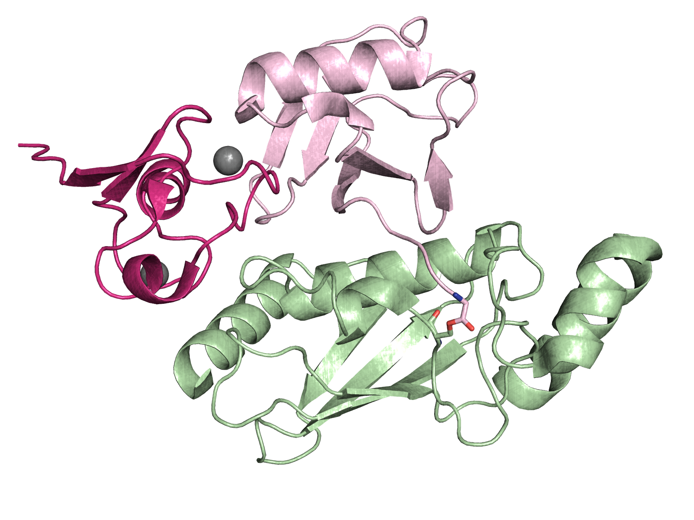
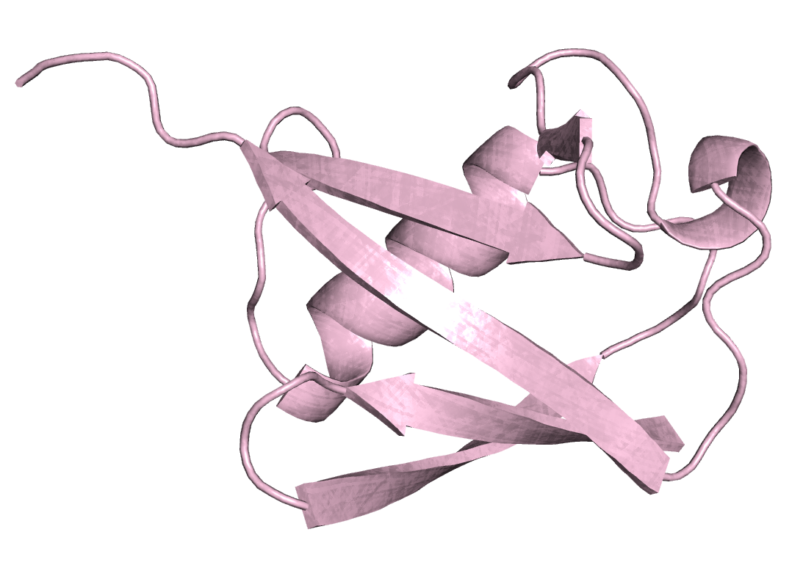
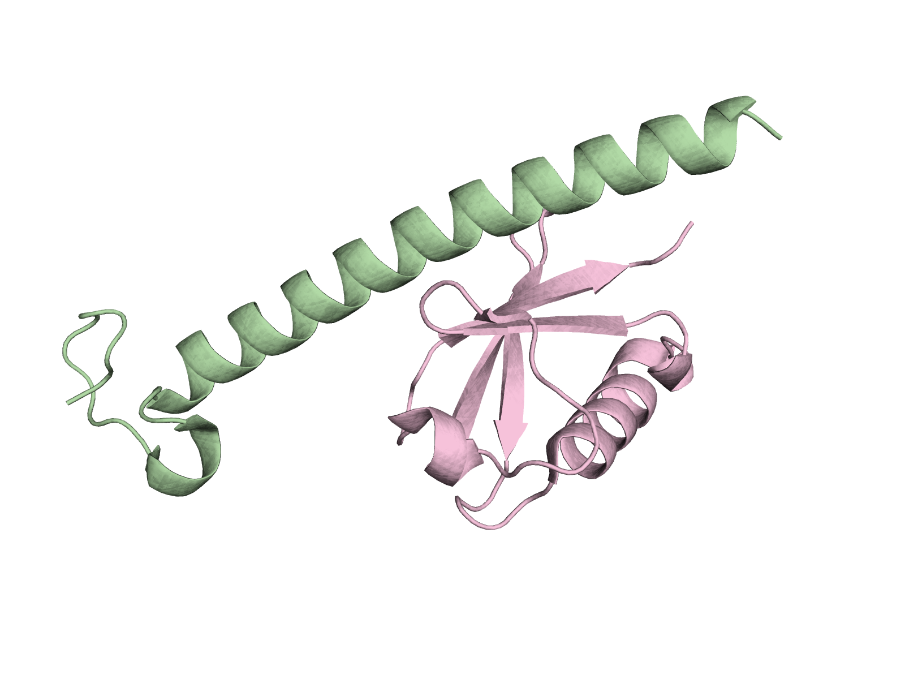
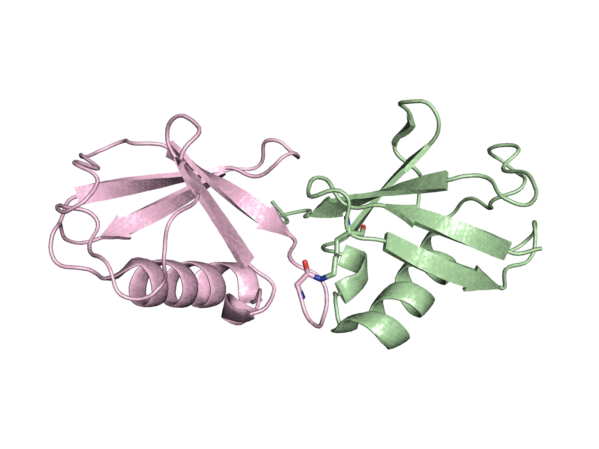

<h3>Please select which group of Ubuiquitin like structures to browse</h3>

<div class="row row-centered">
	<div class="col-md-5 col-centered"><a href="#browse/CJ"> Conjugated structures  </a></div>
	<div class="col-md-5 col-centered"><a href="#browse/MU">Mono-ubuiqtin structures  </a></div>
	<div class="col-md-5 col-centered"><a href="#browse/NC">Non-conjugated structures  </a></div>
	<div class="col-md-5 col-centered"><a href="#browse/UC">Ubiquitin chains  </a></div>
</div>
